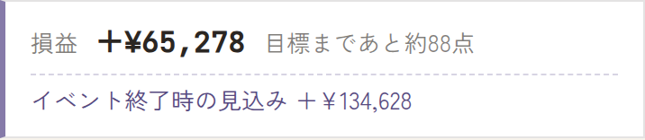
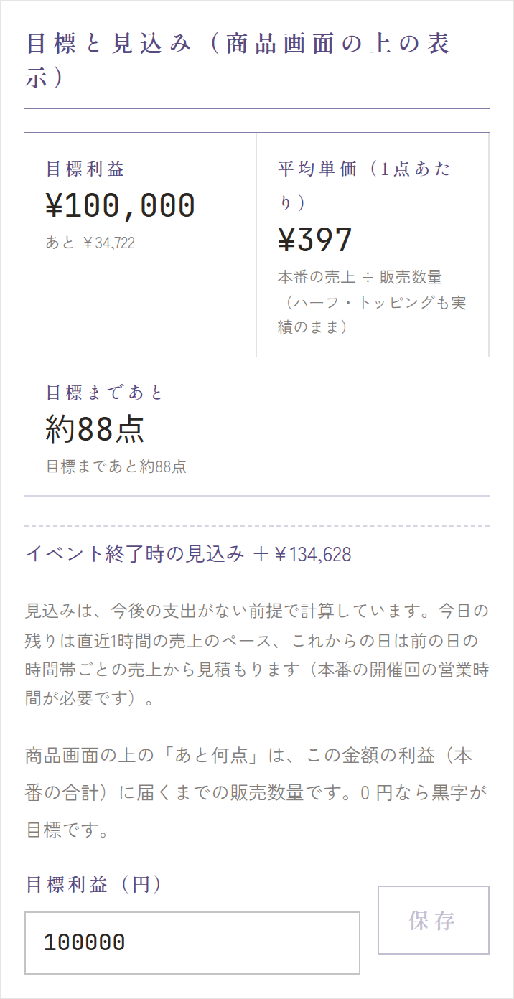

管理画面の 商品 の画面のいちばん上に、今の開催の本番の合計の損益が2行で出ます。1分ごとに新しくなり、押すと収支の画面が開きます。


1行目: 損益と「あと何点」
- 損益: 収支報告の差引（本番の合計の 収入 − 支出）と同じです。
- 黒字まであと約N点: 赤字のとき、あと何点売れば黒字になるかの目安です。目標利益を決めているときは「目標まであと約N点」になります。
- 点数は、足りない金額 ÷ 1点あたりの平均単価（本番の売上 ÷ 売れた数）で、切り上げています。ハーフやトッピングも、売れた実績のまま平均に入ります。
- 届いているときは「黒字です」「目標に届きました」と出ます。
2行目: イベント終了時の見込み
- このまま売れたら、最後の日の閉店のときに損益がいくらになるかの見込みです。
- 今日の残りは、直近1時間の売上のペースで、これからの日は、前の日の時間帯ごとの売上で見積もります。
- 終わったあとは「イベント終了時 ＋¥…（確定）」と出ます。
- 「営業時間が未設定です」と出るときは、見込みを計算できません。運営に連絡してください。「売上が出てから計算します」は、まだ売上がないときです。
見込みは、今後の支出がない前提です
これから材料を買い足すと、そのぶん損益は見込みより下がります。あくまで目安にしてください。
目標利益を決める
「目標まであと何点」の目標は、収支の画面の「目標と見込み（商品画面の上の表示）」で決めます。
- メニューの 収支 を開き、「目標と見込み」の欄まで下がります。
- 目標利益（円）に、本番の合計で出したい利益を入れて 保存 を押します。0 円なら「黒字」が目標です。


この欄には、目標利益・平均単価（1点あたり）・目標まであと何点と、見込みの計算のしかたも出ます。